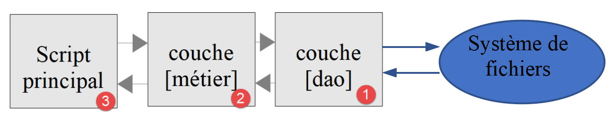

11. Application exercise – version 4
The tax calculation application will now implement the following layered structure:

We are going to take the elements of version 3 and modify them to adapt them to the new architecture of the application. This is called "refactoring". We assume here that the data needed by the application are in text files. It is the [dao] layer that will handle the exchanges with these files.
11.1. Script tree
Version 4 is in the [scripts-console/impots/version-04] folder:
The [Tests] folder contains the automated tests of version 4, which we will present at the end of the chapter.
11.2. Objects exchanged between layers
We keep some elements of version 3 unchanged:
- the [ExceptionImpots] exception is the exception that the [dao] layer will throw when it encounters a problem either with data access or with the nature of the data (incorrect data);
- the [Utilitaires] class groups methods useful for handling text files (here a single method, [cutNewLineChar]);
- the [readonly] class [TaxAdminData] encapsulates the tax administration data. It is obtained with the static method [TaxAdminData::fromJsonFile($fichier)] (or [TaxAdminData::fromArray($tableau)]), which checks the validity of the data and throws an [ExceptionImpots] if they are incorrect.
We add a new class [TaxPayerData] that encapsulates a taxpayer's data and the results of their tax calculation [TaxPayerData.php]:
Comments
- line 9: like [TaxAdminData], the [TaxPayerData] class is immutable: its objects pass from one layer to another without any risk of being modified along the way;
- lines 13-15: the taxpayer's data needed to calculate their tax;
- lines 17-21: the results of the tax calculation. They are of nullable type ([?int], [?float]) with the default value [null]: a [TaxPayerData] object is first created by the [dao] layer with only the taxpayer's data, [new TaxPayerData("oui", 2, 55555)], the tax not yet having been calculated. The property names are those of the JSON keys of the version 3 results file: the [resultats.txt] file will thus keep the same format;
- lines 27-36: since the object is immutable, the calculation results cannot be added to it. The [avecRésultats] method returns a copy of the object completed with the results. It uses the PHP 8.5 [clone] operator, which accepts as its second parameter an array of the properties to modify in the copy (see the chapter on classes). The PHP 7 course used a mutable object with eight getters and eight setters;
- lines 39-42: the [__toString] method returns the JSON string of the object. It will be used to write the results file.
11.3. The [dao] layer
We are interested here in layer [1] of our application:

11.3.1. The [InterfaceDao] interface
The interface of the [dao] layer will be as follows [InterfaceDao.php]:
Comments
- the specifications here are as follows:
- the taxpayers' data are in a text file;
- the results of the tax calculation are saved in a text file;
- any errors are saved in a text file;
- we do not know in what form the tax administration data are available. For each new form, the [InterfaceDao] interface will have to be implemented by a new class;
- the interface methods that encounter an unrecoverable error while accessing data must throw an exception of type [ExceptionImpots];
- line 15: the method for obtaining the taxpayers' data [marital status, number of children, annual salary]:
- the 1st parameter is the name of the text file in which these data are located;
- the second parameter is the name of the text file in which to save any errors encountered;
- line 14: the [array] type does not say what the array contains. The documentation comment [/** @return TaxPayerData[] */] (PHPDoc syntax) specifies that it is an array of [TaxPayerData] objects. PHP ignores it, but the [PHP Intelephense] extension of [VS Code] uses it: it then knows the type of the array's elements and can suggest their properties as you type;
- line 18: the method for obtaining the tax administration data. No parameter is passed to it because we do not know how the data are stored;
- line 22: the method for saving the results of the tax calculation to a text file whose name is passed as a parameter.
When writing the [InterfaceDao] interface, we know there will be different ways of writing the [getTaxAdminData] method depending on how the tax administration data are stored. The [InterfaceDao] interface will therefore be implemented by different classes, each handling a particular storage of these data (JSON file, database, web service). These classes will nevertheless share common code, that of the implementation of the [getTaxPayersData] and [saveResults] methods. We saw in the chapter on traits that this use case can be implemented in two ways:
- we create an abstract class C that groups the code common to the derived classes. Class C implements interface I, but some methods, which must be defined in the derived classes, are declared abstract in class C, which is therefore itself abstract. We then create classes C1 and C2 derived from C, each of which implements in its own way the abstract methods of their parent class C;
- we create a trait T almost identical to the abstract class C of the previous solution. This trait does not implement interface I because syntactically it cannot. We then create classes C1 and C2 implementing interface I and using trait T. All that remains for these classes is to implement the methods of interface I not implemented by the trait T they import.
For the sake of the example, we are going to use a [TraitDao] trait here. Version 3 used an abstract class.
11.3.2. The [TraitDao] trait
The code of the [TraitDao] trait is as follows [TraitDao.php]:
Comments
- line 9: here we define a trait and not a class;
- line 12: a trait constant (PHP 8.2), typed (PHP 8.3): the field separator of a line of the taxpayers' file. It becomes a constant of the class that uses the trait and is used with the notation [self::SEPARATEUR];
- line 15: since PHP 8.3, the [#[\Override]] attribute is accepted on a trait method. It is checked in the class that uses the trait: here the method must correspond to a method of the [InterfaceDao] interface implemented by that class;
- lines 16-74: the [getTaxPayersData] method implements the method of the same name of the [InterfaceDao] interface. It retrieves from the text file named [$taxPayersFilename] the taxpayers' data [marital status, number of children, annual salary]. It returns them as an array [$taxPayersData] of elements of type [TaxPayerData] (line 58);
- the [getTaxPayersData] method is very similar to the [AbstractBaseImpots::executeBatchImpots] method of version 3, with the following differences:
- the [getTaxPayersData] method only retrieves the taxpayers' data. It does not calculate any tax: that is the role of the [métier] layer;
- as the [executeBatchImpots] method did, it reports erroneous lines. Here, the errors are first stored in an array [$errors], an array that is saved to a text file at the end of processing (line 71). Depending on the case, it is empty or not. An erroneous line no longer causes an exception: it is up to the calling code to consult the errors file;
- in the case of an unrecoverable error, an exception of type [ExceptionImpots] is thrown (line 25, line 64);
- lines 23-26: the file is opened before the [try / finally] structure. If opening fails, an exception is thrown and there is nothing to close. If it succeeds, the [finally] clause (lines 66-69) guarantees that the file is closed, whether or not an exception occurs. This organization avoids the "has the file been opened?" test of version 3;
- lines 62-65: note the processing done on exiting the read loop. The [fgets] function has the drawback of returning [false] both when reading has reached the end of the file and when reading could not complete because of an error. To distinguish the two cases, we test whether we have reached the end of the file with the [feof] function. If not, an error has occurred and we then throw an exception;
- lines 78-82: implementation of the [saveResults] method of the [InterfaceDao] interface. Each [TaxPayerData] element of the array is turned into a string by the [strval] function, which calls the object's [__toString] method: we get its JSON string. [strval(...)] designates the [strval] function itself (first-class callable, PHP 8.1);
- lines 85-92: the private method [saveLines] saves an array of lines to a text file, each line being terminated by the end-of-line mark \n;
- line 89: the PHP function [file_put_contents] saves a string to a text file. It takes care of opening the file, writing the string into it and closing the file. It returns [false] if an error occurred. In that case, PHP also emits a warning. The [@] operator suppresses this warning: the error is reported by the exception thrown on the next line, with a clearer message.
The [TraitDao] trait has implemented two of the methods of the [InterfaceDao] interface, [getTaxPayersData] and [saveResults]. It remains for us to implement the [getTaxAdminData] method, which retrieves the tax administration data.
11.3.3. The [DaoImpotsWithTaxAdminDataInJsonFile] class
The [DaoImpotsWithTaxAdminDataInJsonFile] class implements the [InterfaceDao] interface as follows:
Comments
- line 9: the [DaoImpotsWithTaxAdminDataInJsonFile] class implements the [InterfaceDao] interface;
- line 12: the class uses the [TraitDao] trait which, as we know, implements the [getTaxPayersData] and [saveResults] methods of the [InterfaceDao] interface. All that remains for the class is therefore to implement the [getTaxAdminData] method, which retrieves the tax administration data;
- line 15: the property of type [TaxAdminData] returned by the [getTaxAdminData] method. It is initialized by the constructor;
- line 21: the tax administration data are read from the JSON file. If the file is missing or incorrect, an [ExceptionImpots] exception propagates up to the calling code.
We have finished with the [dao] layer of our application: we have a class that fully implements the [InterfaceDao] interface we set ourselves. We can now move on to the [métier] layer.
11.4. The [métier] layer
We are now going to implement layer [2] of our architecture:

11.4.1. The [InterfaceMetier] interface
The interface of the [métier] layer will be as follows [InterfaceMetier.php]:
Comments
- line 13: the [métier] layer knows how to calculate the amount of tax of a particular taxpayer provided it is given the following information: marital status, number of children, annual salary. The [calculerImpot] method is a purely "business" method: it does not care where the data it uses come from. It does not use the [dao] layer and therefore does not throw any exception;
- line 17: the [métier] layer can also calculate the amount of tax of a set of taxpayers whose data are gathered in the text file named [$taxPayersFileName]. It puts the results in the text file named [$resultsFileName]. Non-fatal errors are saved in the text file named [$errorsFileName]. The [executeBatchImpots] method must address the [dao] layer, which handles access to the file system. Exceptions may then propagate up from the [dao] layer: the [executeBatchImpots] method will not catch them; it will let them propagate up to the main script.
11.4.2. The [Metier] class
The [Metier] class implements the [InterfaceMetier] interface as follows:
Comments
- line 9: the [Metier] class implements the [InterfaceMetier] interface, that is, the [calculerImpot] and [executeBatchImpots] methods;
- line 12: the object of type [TaxAdminData] that encapsulates the tax administration data. These data are needed by the business method [calculerImpot];
- lines 15-21: the constructor initializes the two properties of the class:
- the [$dao] property, a reference to the [dao] layer, is initialized through promotion of the constructor parameter. One is absolutely required so that the [métier] layer knows whom to address when it wants external data. Note that the type of this parameter is that of the [InterfaceDao] interface, thus allowing the [Metier] class to work with any class implementing this interface. The PHP 7 course also offered a [setDao] setter: it disappears, the [dao] layer being injected once and for all by the constructor;
- the [$taxAdminData] property is initialized by calling the [getTaxAdminData] method of the [dao] layer;
- we conclude that when the [calculerImpot] and [executeBatchImpots] methods execute, the two properties [$dao] and [$taxAdminData] are initialized. The test [$this->taxAdminData ??= $this->getTaxAdminData()] of version 3 is no longer needed;
- lines 26-77: this code is that of the [AbstractBaseImpots::calculerImpot] method of version 3. The same goes for the private methods [calculerImpot2], [getRevenuImposable], [getDecote] and [getRéduction], which are not reproduced here.
The [Metier::executeBatchImpots] method is as follows:
Comments
- line 188: the method must repeatedly call the [calculerImpot] method for each of the taxpayers found in the text file named [$taxPayersFileName] and put the results in the text file named [$resultsFileName]. The non-fatal errors encountered are saved in the text file named [$errorsFileName]. The method does not throw any exception itself but lets through those thrown by the [dao] layer;
- line 192: the taxpayers' data are requested from the [dao] layer. It returns an array of elements of type [TaxPayerData]. If an exception occurs here, since it is not caught by a [catch], it automatically propagates up to the calling code and the rest of the method is not executed;
- lines 194-199: the [array_map] function applies a function to each of the elements of the [$taxPayersData] array and returns the array of results. The function applied is an arrow function that calculates the tax of the taxpayer [$taxPayerData] and returns a copy of [$taxPayerData] completed with the calculation results (line 195). Note that the arrow function uses [$this]: an arrow function automatically captures the variables of its context, [$this] included;
- line 201: once the tax has been calculated for all taxpayers, the results are saved to a text file. It is the [dao] layer that does this work.
In general, the [métier] layer is fairly simple to write because it addresses the [dao] layer, which handles data access together with the error handling that goes with it.
11.5. The main script
We now write the script of layer [3] of our architecture:

The main script is as follows [main.php]:
Comments
- lines 10-18: loading of the application's classes, interfaces and trait. A trait must be loaded before the class that uses it;
- line 21: the name of the taxpayers' data file;
- line 22: the name of the results file;
- line 23: the name of the errors file;
- line 24: the name of the JSON file containing the tax administration data;
- line 28: creation of the [dao] layer;
- line 30: creation of the [métier] layer, relying on this [dao] layer;
- line 32: execution of the [executeBatchImpots] method of the [métier] layer;
- lines 34-37: we have seen that the [dao] and [métier] layers could propagate exceptions. They are caught here.
11.6. Visual tests
11.6.1. Test no. 1
We run the [main.php] script in a terminal opened in the [version-04] folder:
With the taxpayers' file [taxpayersdata.txt] of version 3:
we get the following errors file [errors.txt]:
and the following results file [resultats.txt]:
These are the results of version 3.
11.6.2. Test no. 2
In the main script, we use, for the taxpayers' file, a file name that does not exist:
The results obtained on the console are then as follows:
We get only the message of the exception thrown by the [dao] layer. In the PHP 7 course, the [fopen] function was called on the non-existent file: the PHP interpreter then displayed a warning before the exception's message:
The PHP 7 course made this message disappear by asking PHP not to display errors with the statement [ini_set("display_errors", "0")]. This is the right configuration for a production server (errors are then written to a log file), but during development you need to see all of PHP's messages. We therefore prefer not to trigger the warning: the [dao] layer checks with the [is_readable] function that the file can be read before opening it.
11.7. [PHPUnit] tests
Visual tests are very inadequate:
- we generally limit ourselves to a few tests;
- we are more or less attentive during this visual check, and details may escape us.
In real-world professional development, tests are written as code and run automatically, often after every change to the code. We try to make the tests as complete as possible. To do so, we use testing frameworks.
Here we will use [PHPUnit] [https://phpunit.de/], the reference testing framework in PHP. The PHP 7 course used the [Codeception] framework, chosen because it integrated with the NetBeans IDE, and which in fact used PHPUnit under the hood. We will use only a small part of PHPUnit's capabilities. The idea is to have a quick way, after each new version of the application exercise, to check that it works. Having passing tests gives developers confidence in the code they have written. This is an important factor.
11.7.1. Installing [PHPUnit]
Like many PHP libraries, [PHPUnit] is installed with [Composer], PHP's dependency manager, supplied with [Laragon]. The [php8-oct-2026] folder of the course code contains a [composer.json] file that declares the libraries used by the course. PHPUnit appears in it in the [require-dev] section, the one for libraries needed only for development:
If this has not already been done, simply open a terminal in the [php8-oct-2026] folder and type the command:
[Composer] then downloads all the libraries declared in [composer.json] into the [vendor] folder of [php8-oct-2026]. PHPUnit is installed there with its executable [vendor/bin/phpunit]. In a project that did not yet have PHPUnit, it would be added with the command [composer require --dev phpunit/phpunit], which downloads it and registers it in the [require-dev] section of the [composer.json] file.
Version 12 of PHPUnit requires PHP 8.3 or later. Its documentation is available at [https://docs.phpunit.de/].
11.7.2. The [phpunit.xml] configuration file
The [php8-oct-2026] folder also contains the PHPUnit configuration file [phpunit.xml]. When PHPUnit is launched from this folder, it automatically uses this file:
Comments
- line 5: the XML schema that describes the syntax of the file. [VS Code] uses it to check the file and suggest the possible attributes;
- line 6: no colours in the display of the results. You can set [true] to have passing tests in green and failures in red in the terminal;
- lines 7-10: a test that causes a PHP deprecation, notice or warning is considered a failure, even if its assertions hold. This is a way of enforcing clean PHP 8 code: for example, using a feature deprecated in PHP 8.5 would make the tests fail;
- lines 11-13: in these cases, PHPUnit displays the details of PHP's message;
- line 14: the folder where PHPUnit stores information from one run to the next (for example the tests that failed, in order to run them first the next time);
- lines 15-20: the folders of the tested source code. [ignoreSuppressionOfDeprecations] means that a deprecation is reported even if it has been suppressed by the [@] operator.
11.7.3. Tests of the [dao] layer
The tests of version 4 are in the [version-04/Tests] folder. A PHPUnit test class:
- extends the [PHPUnit\Framework\TestCase] class;
- has a name ending in [Test], in a file of the same name: this is how PHPUnit finds the test classes of a folder;
- has public test methods whose names begin with [test];
- may have a [setUp] method, executed before each test method, and a [tearDown] method, executed after each test method. They are used to prepare the test environment and then to clean it up. Each test method thus runs in a fresh environment, independently of the others.
In a test method, results are checked with assertion methods inherited from [TestCase], for example:
Assertion | Checks that |
[assertSame($attendu, $obtenu)] | the two values are identical ([===]: same type and same value) |
[assertEquals($attendu, $obtenu)] | the two values are equal ([==]) |
[assertEqualsWithDelta($attendu, $obtenu, $delta)] | the two numbers are equal to within [$delta] |
[assertTrue($obtenu)], [assertFalse($obtenu)], [assertNull($obtenu)] | the value is [true], [false], [null] |
[assertCount($n, $tableau)] | the array has [$n] elements |
[assertStringContainsString($sous, $chaîne)] | the string contains the substring |
[expectException($classe)] | the code that follows throws an exception of the given class |
To build the tests of a version of the application exercise, we use an environment identical to that of the version's main script [main.php]: the same files loaded, the same layers built in the same way.
The [DaoTest] test class is as follows [Tests/DaoTest.php]:
1 2 3 4 5 6 7 8 9 10 11 12 13 14 15 16 17 18 19 20 21 22 23 24 25 26 27 28 29 30 31 32 33 34 35 36 37 38 39 40 41 42 43 44 45 46 47 48 49 50 51 52 53 54 55 56 57 58 59 60 61 62 63 64 65 66 67 68 69 70 71 72 73 74 75 76 77 78 79 80 81 82 83 84 85 86 87 88 89 90 91 92 93 94 95 96 97 98 99 100 101 102 103 104 105 106 107 108 109 110 111 112 113 114 115 116 117 118 119 120 121 | |
Comments
- line 7: the test classes are in the [Application\Tests] namespace, distinct from that of the application;
- lines 10-16: the classes used are imported with the [use] statement. The application's classes are in the [Application] namespace, PHPUnit's in [PHPUnit\Framework];
- lines 19-25: we load the files of the [dao] layer, as in [main.php]. The paths are relative to the folder of the test file ([__DIR__]): the tests work whatever the folder PHPUnit is launched from and whatever the location of the [php8-oct-2026] folder on disk. The PHP 7 course used absolute paths [C:/Data/...], specific to the author's machine. PHPUnit's classes, for their part, are loaded automatically by the [Composer] autoloader that PHPUnit sets up;
- line 27: the test class extends [TestCase];
- line 30: the version 4 folder, where the data files are located;
- lines 38-44: before each test, we build the [dao] layer as [main.php] does and create a temporary file for the errors. The [tempnam] function creates a file with a unique name in the system's temporary files folder, returned by [sys_get_temp_dir]. The PHP 7 course did this work in the constructor of the test class: the constructor of [TestCase] must no longer be overridden since PHPUnit 10;
- lines 48-52: after each test, the temporary file is deleted;
- lines 55-73: the test of the tax administration data. We check that the content of the [TaxAdminData] object returned by the [dao] layer matches what is expected. We use the [assertSame] method: [assertSame(1551.0, ...)] checks that the value is the real 1551.0; [assertSame(1551, ...)] would fail because the integer 1551 is not identical to the real 1551.0. For arrays, [assertSame] checks that the two arrays have the same keys, in the same order, with identical values;
- lines 76-85: a data provider. It is a public static method that returns an array of data sets. Each data set is an array of the arguments to pass to a test method. The key of each set ("fichier inexistant" (non-existent file)...) gives it a name that will appear in the test results;
- line 87: the PHP 8 attribute [#[DataProvider]] indicates that the test method [testTaxAdminDataInvalides] must be executed once for each data set of the [fichiersInvalides] provider. Versions of PHPUnit prior to version 10 used instead an annotation in a comment, [/** @dataProvider fichiersInvalides */]: annotations are no longer recognized since PHPUnit 12;
- lines 88-95: we check that a [dao] layer built with an incorrect tax data file throws an [ExceptionImpots] exception with the right error code. The [expectException] and [expectExceptionCode] methods must be called before the code that throws the exception: the test succeeds if the exception is thrown, and fails otherwise. The incorrect files are in the [Tests/data] folder: a malformed JSON file (missing comma), a file without the [plafondDecoteCouple] key, a file with a negative value;
- lines 98-112: the test of reading the taxpayers' data. The [taxpayersdata.txt] file of version 4 contains 11 correct lines and 2 erroneous lines. We check the number of taxpayers obtained, their type ([assertContainsOnlyInstancesOf]), the content of the first and the last, then the content of the errors file. To compare two [TaxPayerData] objects, we use [assertEquals]: two distinct objects are never identical ([===]), but they are equal ([==]) if their properties are equal;
- lines 115-120: a non-existent taxpayers' file must cause an exception with code 12.
11.7.4. Running the tests
The tests are run in a terminal opened in the [php8-oct-2026] folder, passing PHPUnit the tests folder:
- line 5: PHPUnit found and used the [phpunit.xml] configuration file;
- line 7: one dot per passing test. The 18 tests are those of the two test classes [DaoTest] and [MetierTest] (the latter is presented in the next section): a test run with a data provider counts as many tests as there are data sets;
- line 11: the summary: all tests passed.
The [--testdox] option gives a more readable display, where each test is described by a sentence built from the name of its method and the name of its data set:
Let us now show a failing test. In the [MetierTest] class, we introduce an error in the expected reduction for the 2nd taxpayer (346 instead of 347). Running the tests then gives the following result:
- line 7: the letter F (Failure) marks the test that failed;
- line 13: the test that failed, with the name and content of its data set;
- lines 14-24: the assertion that failed ([assertSame]) and the difference between the expected (-) and actual (+) arrays;
- line 26: the file and line of the assertion that failed;
- lines 28-29: the summary.
When a test does not even run (for example because a file loaded by [require_once] cannot be found), PHPUnit displays the corresponding PHP error, as running an ordinary PHP script would.
11.7.5. Tests of the [métier] layer
The [MetierTest] test class follows the same construction rules as the [DaoTest] class [Tests/MetierTest.php]:
Comments
- lines 18-26: loading of the files of the [dao] and [métier] layers. The test environment is the same as that of [main.php];
- lines 37-43: instantiation of the [dao] and [métier] layers, as in [main.php];
- lines 46-73: the data provider: the eleven taxpayers of the table of official figures. Each data set contains the taxpayer's data, the tax given by the official simulator of the tax administration [https://www3.impots.gouv.fr/simulateur/calcul_impot/2019/simplifie/index.htm] and the expected results of the document's algorithm;
- line 76: the [testCalculerImpot] method will be executed eleven times, once per taxpayer. The PHP 7 course wrote eleven almost identical test methods, [test1] to [test11]: the data provider avoids this repetition;
- line 80: the tax calculation is performed by the [métier] layer;
- line 82: we check that the calculated tax is that of the official simulator to within 1 euro. We saw, indeed, that rounding issues meant that the document's algorithm gave the official results to within 1 euro;
- line 84: we check that the results array [impôt, surcôte, décôte, réduction, taux] is exactly the expected one, including the type of the values: integers for the amounts, a real for the rate. This is why the rate of the 9th taxpayer is written 0.0 and not 0. This exact check protects against any unintentional change to the algorithm in the next versions.
The results of running these tests are those shown in the previous section: the 11 tests of the [métier] layer pass.
11.7.6. PHPUnit in VS Code
The simplest way to run the tests in [VS Code] is to use its integrated terminal (menu Terminal / New Terminal): it opens in the project's [php8-oct-2026] folder, and there you type the command [php vendor/bin/phpunit scripts-console/impots/version-04/Tests]. The keyboard's up arrow recalls the last command: re-running the tests after a code change costs just one keystroke.
Some useful options of the [phpunit] command:
- [--testdox]: displays the tests as sentences;
- [--filter testCalculerImpot]: runs only the tests whose name contains the given text;
- [--stop-on-failure]: stops at the first failure.
There are also [VS Code] extensions that integrate PHPUnit into the editor's test explorer (for example the "PHPUnit Test Explorer" extension): they let you launch a test with a click and display the results next to the code. In reality, they run the same [phpunit] command that we type in the terminal.
11.7.7. Tests of the next versions
In what follows, the tests of the [dao] and [métier] layers will be identical to those of version 4. Only the test environment will change: the files loaded and the way the [dao] and [métier] layers are built. We will therefore present only that environment and the test results.